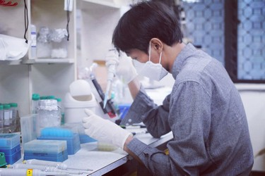

Nur Aziz
Summary
I am passionate about molecular biology research, particularly in cancer biology and innate immunity.
My academic background mainly focused on understanding the molecular complexity of protein methylation in cancer. The need to explore public RNAseq datasets from cancer patients drove me to (self)-study bioinformatics which I also found a very fascinating field. In addition, I am also familiar with molecular signaling such as inflammation-related transcription factor signaling ie. NF-kB, AP-1, and IRF3. As part of my combined Master-PhD study, I have elucidated several molecular targets of plant extracts or compounds in the context of their anti-inflammation property.
I am currently searching for a postdoctoral position. Download a brief version of my CV as PDF.

Pharmacy Program, Universitas Ma Chung, Indonesia
Academia
Education
| year | what |
|---|---|
| 2017 — 2022 | PhD in Integrative Biotechnology, Sungkyunkwan University, South Korea |
| 2012 — 2016 | B Pharm, School of Pharmacy, Institut Teknologi Bandung, Indonesia |
Research
Publications
| type | citation |
|---|---|
| Research Article | Nur Aziz (2022). Potential Roles of Methyltransferases Family 16 in Breast Cancer Syntax Literate |
| Research Article | Young-Su Yi, Han Gyung Kim, Ji Hye Kim, Woo Seok Yang, Eunji Kim, Jae Gwang Park, Nur Aziz, Narayanan Parameswaran, Jae Youl Cho (2022). Syk promotes phagocytosis by inducing reactive oxygen species generation and suppressing SOCS1 in macrophage-mediated inflammatory responses International Journal of Immunopathology and Pharmacology |
| Research Article | Nur Aziz, Eunji Kim, Yanyan Yang, Han Gyung Kim, Tao Yu, Jae Youl Cho (2022). p38-Dependent c-Jun Degradation Contributes to Reduced PGE2 Production in Sodium Orthovanadate-Treated Macrophages BMB Reports |
| Research Article | Yo Han Hong, Nur Aziz [shared first authorships], Jae Gwang Park, Dagyeong Lee, Jin Kyeong Kim, Seung A.Kim, Wooram Choi, Chae Young Lee, Hwa Pyoung Lee, Ha Thi Huyen Trang, Han Gyung Kim, Young-Jun Jeon, Bokyoung Kim, Younghoon Kim, Kyung-Hee Kim, Byong Chul Yoo, Jeung-Whan Hang, Narayana Parameswaran, Jae Youl Cho (2022). The EEF1AKMT3/MAP2K7/TP53 axis suppresses tumor invasiveness and metastasis of gastric cancer Cancer Letters |
| Research Article | Kon Kuk Shin, Sang Hee Park, Hye Yeon Lim, Laura Rojas Lorza, Nurinanda Prisky Qomaladewi, Long You, Nur Aziz, Soo Ah Kim, Jong Sub Lee, Eui Su Choung, Jin Kyung Noh, Dong-Keun Yie, Deok Jeong, Jongsung Lee, Jae Youl Cho (2022). In Vitro Anti-Photoaging and Skin Protective Effects of Licania macrocarpa Cuatrec Methanol Extract Plants |
| Research Article | Young-Su Yi, Han Gyung Kim, Ji Hye Kim, Woo Seok Yang, Eunji Kim, Deok Jeong, Jae Gwang Park, Nur Aziz, Suk Kim, Narayanan Parameswaran, Jae Youl Cho (2021). Syk-MyD88 Axis Is a Critical Determinant of Inflammatory-Response in Activated Macrophages Frontiers in Immunology |
| Research Article | Laily Rahmawati, Nur Aziz, Jieun Oh, Yo Han Hong, Byoung Young Woo, Yong Deog Hong, Philaxay Manilack, Phetlasy Souladeth, Ji Hwa Jung, Woo Shin Lee, Mi Jeong Jeon, Taewoo Kim, Mohammad Amjad Hossain, Jinwhoa Yum, Jong-Hoon Kim, Jae Youl Cho (2021). Cissus subtetragona Planch. Ameliorates Inflammatory Responses in LPS-induced Macrophages, HCl/EtOH-induced Gastritis, and LPS-induced Lung Injury via Attenuation of Src and TAK1 Molecules |
| Research Article | Laily Rahmawati, Sang Hee Park, Dong Seon Kim, Hwa Pyoung Lee, Nur Aziz, Chae Young Lee, Seung A Kim, Seok Gu Jang, Dong Sam Kim, Jae Youl Cho (2021). Anti-Inflammatory Activities of the Ethanol Extract of Prasiola japonica, an Edible Freshwater Green Algae, and Its Various Solvent Fractions in LPS-Induced Macrophages and Carrageenan-Induced Paw Edema via the AP-1 Pathway Molecules |
| Research Article | Woo Seok Yang, Han Gyung Kim, Eunji Kim, Sang Yun Han, Nur Aziz, Young-Su Yi, Sunggyu Kim, Yunmi Lee, Byong Chul Yoo, Jeung-Whan Han, Narayanan Parameswaran, Ji Hye Kim, Jae Youl Cho (2020). Isoprenylcysteine Carboxyl Methyltransferase and Its Substrate Ras Are Critical Players Regulating TLR-Mediated Inflammatory Responses Cells |
| Research Article | Nur Aziz, Yo Han Hong, Min Kyeong Jo, Jin Kyeong Kim, Kyung-Hee Kim, Hassan Ashktorab, Duane T. Smoot, Hoon Hur, Byong Chul Yoo, Jae Youl Cho (2020). Molecular Signatures of JMJD10/MINA53 in Gastric Cancer Cancers |
| Research Article | Nur Aziz, Young-Gyu Kang, Yong-Jin Kim, Won-Seok Park, Deok Jeong, Jongsung Lee, Donghyun Kim, Jae Youl Cho (2020). Regulation of 8-Hydroxydaidzein in IRF3-Mediated Gene Expression in LPS-Stimulated Murine Macrophages Biomolecules |
| Review | Jae Gwang Park, Nur Aziz [shared first authorships], Jae Youl Cho (2019). MKK7, the essential regulator of JNK signaling involved in cancer cell survival: a newly emerging anticancer therapeutic target Therapeutic Advances in Medical Oncology |
| Research Article | Kon Kuk Shin, Jae Gwang Park, Yo Han Hong, Nur Aziz, Sang Hee Park, Sunggyu Kim, Eunji Kim, Jae Youl Cho (2019). Anti-Inflammatory Effects of Licania macrocarpa Cuatrec Methanol Extract Target Src- and TAK1-Mediated Pathways Evidence-Based Complementary and Alternative Medicine |
| Research Article | Yo Han Hong, Young-Su Yi, Sang Yun Han, Nur Aziz, Han Gyung Kim, Sang Hee Park, Mohammad Amjad Hossain, Kwang Soo Baik, Su Young Choi, Jongsung Lee, Jong-Hoon Kim, Jae Youl Cho (2019). Morinda citrifolia noni water extract enhances innate and adaptive immune responses in healthy mice, ex vivo, and in vitro Phytotherapy Research |
| Research Article | Nurinanda Prisky Qomaladewi, Nur Aziz, Mi-Yeon Kim, Jae Youl Cho (2019). Piper cubeba L. Methanol Extract Has Anti-Inflammatory Activity Targeting Src/Syk via NF-?B Inhibition Evidence-Based Complementary and Alternative Medicine |
| Review | Nur Aziz, Mi-Yeon Kim, Jae Youl Cho (2018). Anti-inflammatory effects of luteolin: A review of in vitro, in vivo, and in silico studies Journal of Ethnopharmacology |
| Research Article | Nur Aziz, Young-Jin Son, Jae Youl Cho (2018). Thymoquinone Suppresses IRF-3-Mediated Expression of Type I Interferons via Suppression of TBK1 International Journal of Molecular Sciences |
| Research Article | Neng Fisheri Kurniati, Afrillia Nuryanti Garmana, Nur Aziz (2017). Antibacterial and Antifungal Activities of Ethanol Extract of the Roots, Flowers, and Leaves of Turi (Sesbania grandiflora L. Poir) Acta Pharmaceutica Indonesia |
Talks
Posters
| year_begin | what |
|---|---|
| 2018 | Korean Society for Biochemistry and Molecular Biology (KSBMB) International Conference 2019: Depletion of MINA53 suppresses proliferation and survival of gastric cancer cells by regulating mitogen-activated protein kinase signaling pathway, Jeju, South Korea |
Teaching experience
| year | what |
|---|---|
| 2022 — Now | Pharmacy Program - Faculty of
Science and Engineering, Universitas Ma Chung,
Indonesia Universitas Ma Chung |
| 2018 — 2020 | Laboratory assistant:
Molecular Immunology Sungkyunkwan University |
| 2016 | Laboratory assistant:
Integrated Pharmacology Institut Teknologi Bandung |
Other
Grants and Awards
| year_begin | what |
|---|---|
| 2017 | Outstanding Foreign Student Scholarship Award : Full Tuition Fee for Combined Master and PhD Course, Sungkyunkwan University, South Korea |
Research Internship
| year_begin | what |
|---|---|
| 2015 | Isolation and purification of hGCSF from Escherichia coli, Laboratory of Protein Engineering and the Development of Drug Delivery System, Center for Biotechnology Research. Indonesian Institute of Science (LIPI) |
Technical
Wet Lab Skills
| what |
|---|
| - Gene cloning and mutagenesis incl. point mutation, insertion, or deletion |
| - Recombinant protein expression and purification from E. Coli . |
| - Genomic DNA preparation and total RNA extraction . |
| - cDNA synthesis, conventional PCR, and Real-Time PCR analysis . |
| - Mammalian cell cultures . |
| - Cell viability assay . |
| - Gel electrophoresis, Immunoblotting, and gels staining . |
| - Immunoprecipitation and pulldown assay . |
| - Enzyme assay : In viro kinase and methyltransferase assay, ELISA |
| - In-vitro tumorigenic responses phenotyping : proliferation, migration, invasion, colony formation assay, and EMT signature analysis |
| - In-vivo tumor xenograft mouse model |
| - Gene overexpression via transfection |
| - Transcription activity reporter assay . |
| - Generation of lentiviral particle for viral transduction |
| - Generation of transient/stable knockdown cell lines using siRNA/shRNA |
Dry Lab Skills
| what |
|---|
| - Big data analysis and data wrangling in R (using tidyverse and dplyr) |
| - Public dataset analysis of microarray/RNA sequencing from Gene Expression Omnibus (GEO), The Cancer Genome Atlas (TCGA), and GTEx |
| - Differential gene expression analysis DGEs analysis using DESeq2 or limma |
| - Functional gene enrichment analysis (GSEA) |
| - Statistical analysis and data visualization in R (main: ggplot2, pheatmap), or Python (matplotlib) |
| - Sequence aligments and phylogenetic analysis . |
| - Protein 2D / 3D structure visualization : customization using BIOVIA Discovery Studio and Chimera |
Other software proficiency
| what |
|---|
| - Paper figuring and illustration with Adobe Illustrator, Adobe Photoshop, and Corel Draw |
| - Basic office tools ie. Microsoft Office Word, Excel, and PowerPoint |
| - Web development (HTML using R markdown, GitHub Pages, Netlify) |
Personal
Volunteering
| year | what |
|---|---|
| 2013 — 2016 | Teaching Bimbel SOSMAS KAM BG-ITB teaching elementary and junior high school students (weekly) |